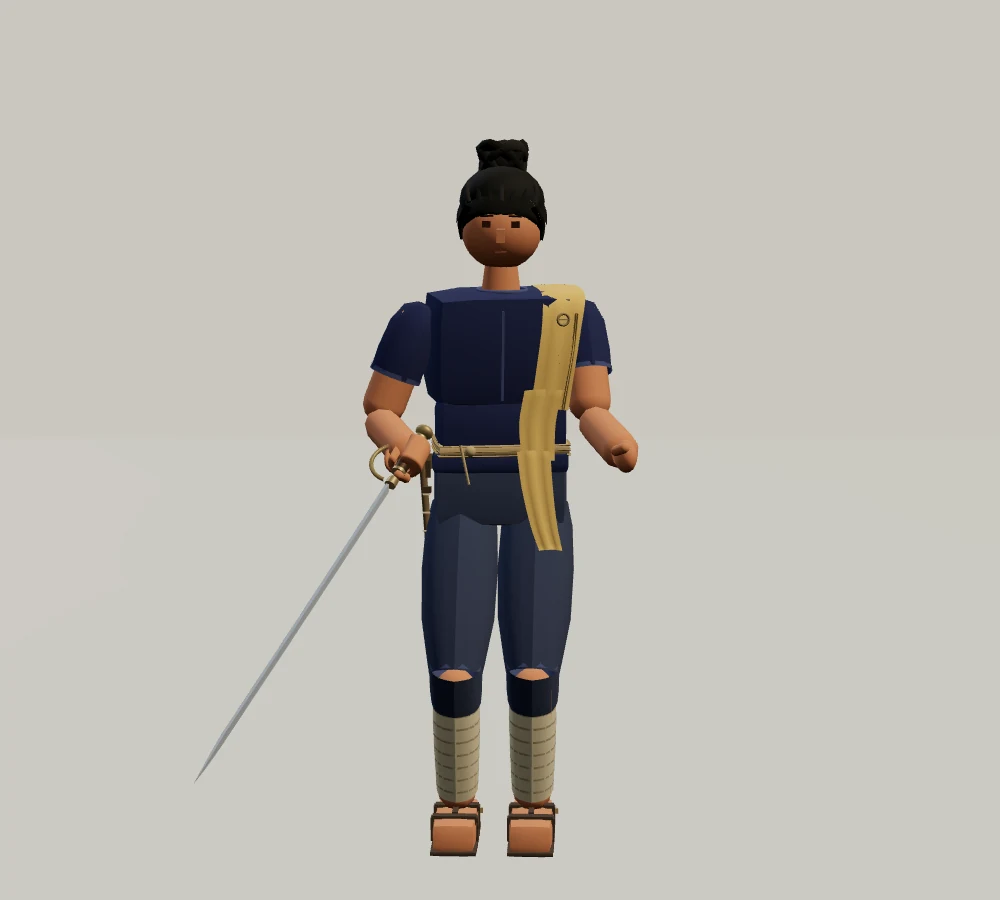
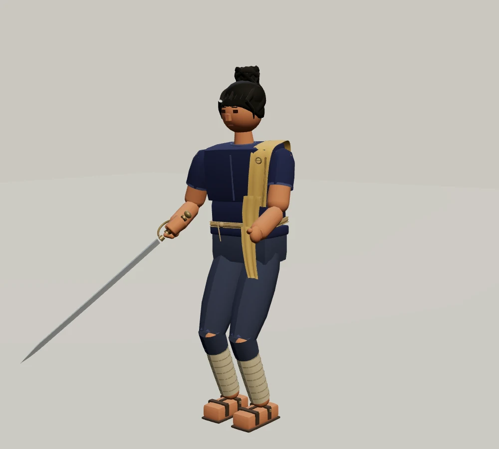

비가 그친 밀림의 한복판. 겹겹의 큰 잎과 덩굴이 하늘을 가리고, 숲에 삼켜진 옛 수문 사이로 물이 흐릅니다.
소리를 켜고, 물방울과 잎 사이에 남은 고요를 들어 보세요.
마을이 옮겨 간 뒤에도 물길에 남은 관리인. 아래쪽 밭이 마르면 막힌 홈을 뚫고, 비가 넘치면 돌을 다시 놓습니다. 허리의 낡은 열쇠와 눈금 막대는 칼보다 오래 쓴 물건입니다.
“지나가도 좋아요. 물길은 건드리지 마세요.”
남색 작업복, 빛바랜 황색 어깨천과 구릿빛 피부. 검은 머리는 물에 닿지 않도록 작게 올려 묶었습니다.

